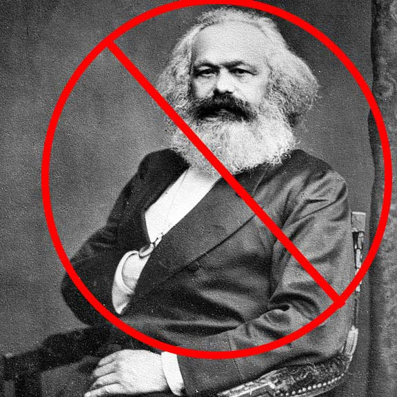

Different types of accidents
These accidents could cause you harm, ending you up in the hospital.

These accidents could cause you harm, ending you up in the hospital.
 This country runs on cash, even though we are this many trillion dollars in debt. In truth, free healthcare is a complicated topic. We have to take insurance into account, and we have to ensure that Doctors and Nurses get paid the correct wages. These two things contradict each other. There is also no other country that has free healthcare. Look it up. There definatly isnt 43 other countries that have figured out how to do this without making insurance agents and doctors pay for it. It's just too complactied of an issue for the entire U.S federal goverment to figure out. Stop spreading communist propaganda.
America is the free-est of the free. If I want to jump off the roof of my house with a plastic Wal-mart bag as a parachute- I am free to do so. Well, I'm free to do so until I land in the hospital against my will. At that point, I'm no longer free. At that point, I already have to pay the $1,200 dollar ambulance ride, and $2,800 dollars per day on top of that. I can refuse medical treatment, but then I would be crippled for life. It's a trap between crippling debt and just being crippled. About 4 in 10 adults cannot afford a hospital stay, so if they are in an accident that is out of their control, they may have to take out a loan. Loans can end life plans, if that person was planning on moving, or startng a family, that could delay those plans, or completly end them. A blind man could see the problem here.